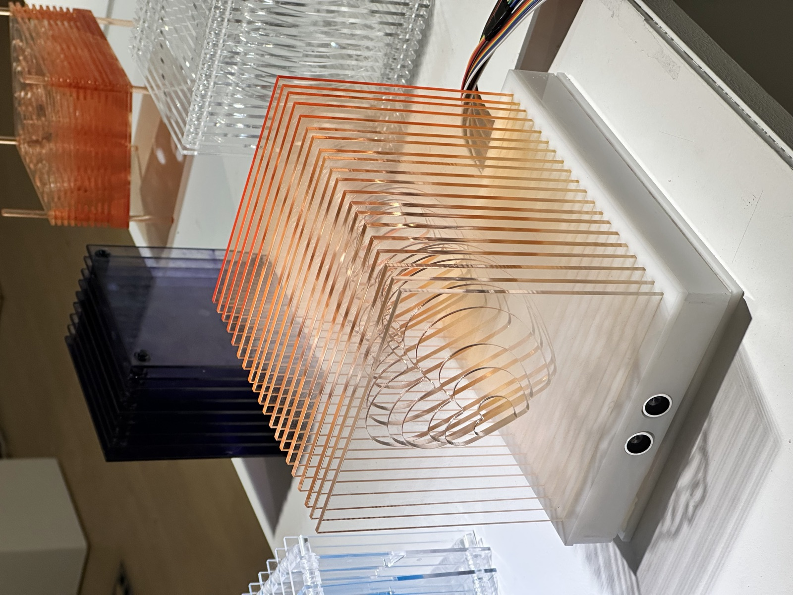
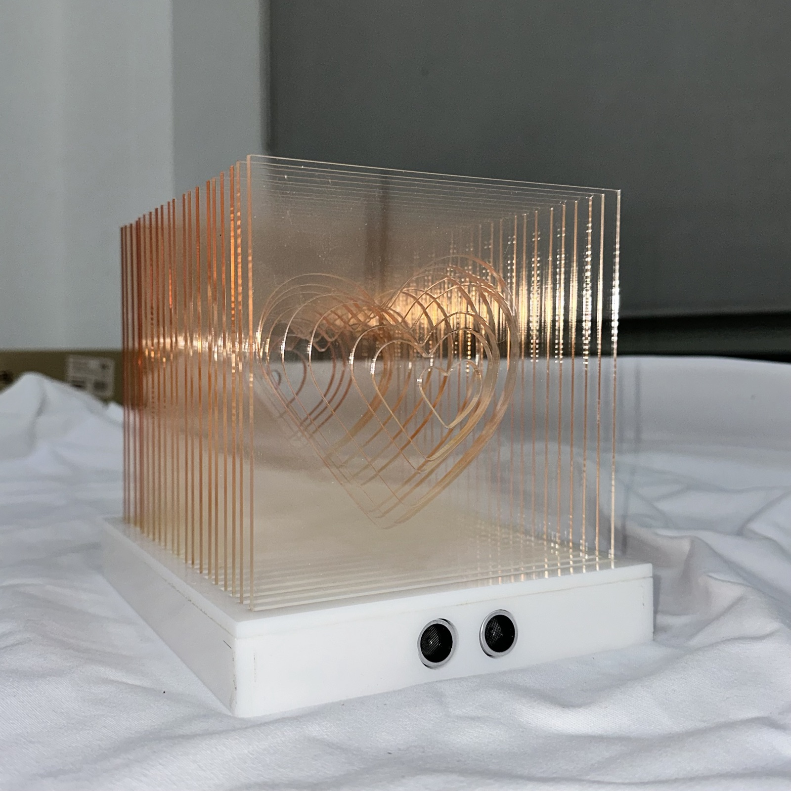
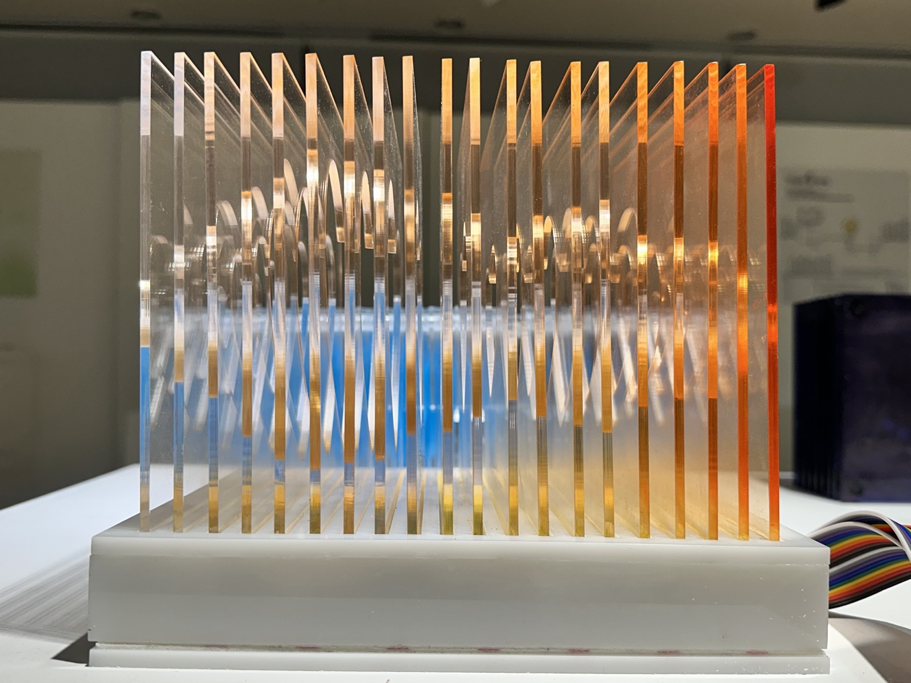

Acrylic Sculpture · 2025
Send Love ( SEND LOVE )
Voice Waveform as Object
Visitors record a short phrase; the voice waveform is extracted, simplified, and engraved into stacked acrylic sheets. Each sculpture is unique to the voice that created it. No two waveforms, no two objects, are the same.



From Sound to Material
Audio is recorded in-browser via Web Audio API. A custom p5.js sketch analyzes the waveform and applies RDP path simplification to reduce noise while preserving the essential shape of each syllable and breath.
The simplified path is exported as DXF and laser-cut into 3mm clear acrylic at varying depths across five stacked layers, giving the waveform volume and a sense of geological time.
The Weight of a Word
The title comes from the instruction given to participants: "Say something you want to send to someone." The most common response, across all sessions, was a variation of "I love you." The project became, unexpectedly, a study in what people choose to preserve.